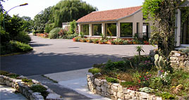

|  |
A l'inititive du docteur André DARFEUILLE, maire de Claye-Souilly.
L’Établissement public médico-éducatif de Claye-Souilly a été créé en 1972 par une décision du préfet de Seine et Marne, sous la dénomination : Institut médico éducatif départemental.
Conçu pour accueillir 80 enfants et adolescents du département de seine et marne, il a été érigé en établissement public départemental en 1986 dans le cadre de la décentralisation.
Ce statut autonome lui a été conféré par un arrêté préfectoral n° 76-85 du 16 octobre 1985.Le conseil d’administration, créé le jour même, était présidé jusqu’en 1997 par monsieur Claude AVISSE, Conseiller Général du Canton de Lagny, Maire de Lagny sur Marne, représentant Monsieur le Président du Conseil Général. Monsieur José HENNEQUIN, Conseiller Général du canton et maire de Villeparisis lui a succédé de 1997 à 2001. |
|
Michèle Pelabere, conseillère générale et adjointe au maire de Villeparisis a occupé cette fonction de 2001 à 2015. Pendant sa mandature, l’établissement c’est doté de services nouveaux :
- Un Centre d’Accueil de Jour de 32 places
- Un Service d’Éducation Spéciale et de Soins A Domicile de 40 places
- Un ITEP de 15 places
- Une unité pour adolescents autistes
- l’externalisation des sites d’hébergement, et la création d’une unité externalisée pour jeunes majeurs a permis d’offrir une palette innovante d’offres d’accompagnement.
|
|
En 2015, c’est Véronique Pasquier, Conseillère Départementale, Conseillère municipale à Claye-Souilly qui à été nommée à la Présidence du Conseil d’Administration.
Connaissant parfaitement le territoire, elle porte la responsabilité de conduire l’établissement dans sa mutation vers de nouvelles missions définies suite aux recommandations émises par le rapport PIVETEAU « zéro sans solution » paru en juin 2014.Ce rapport s'inscrit dans la suite d'autres rapports, comme de la loi de 2005 sur les personnes en situation de handicap, ou encore des orientations fortes du Conseil de l'Europe sur l'inclusion en milieu ordinaire. Il fait l'objet d'une mise en œuvre sous la responsabilité de Marie-Sophie DESSAULE, chargée de mission, sous l'intitulé « Une réponse accompagnée pour tous ».
Cette orientation nationale conduit l’EPMS à revisiter son organisation, à rechercher les coordinations, à faire évoluer les cultures et pratiques professionnelles, pour permettre d'atteindre un objectif consacré par les politiques publiques et attendu par les personnes et leurs familles : accompagner des parcours de vie sans rupture, objectif conduisant à ne plus raisonner en termes de places, mais de dispositifs, au service de parcours individualisés.
Plus largement, les structures médico-sociales poursuivent leur adaptation face à un paysage encore en mouvement. Les autorités publiques envisagent des évolutions dans les modes d'organisation et de coopération. Les professionnels sont eux-mêmes engagés dans des processus d'adaptation, dans un contexte de modification des diplômes du travail social et de la formation professionnelle.
« Ne jamais laisser personne au bord du chemin », dit le rapport Piveteau, au sujet des personnes en situation de handicap dites sans solution, sur listes d'attente, ou bénéficiant d'un accompagnement qui n'est pas ou plus adapté à leurs besoins. L’établissement s’engage dans cette mutation historique pour le secteur de l’accompagnement du handicap en s’appuyant sur le principe que quelque soit la complexité ou la gravité de leur situation, les personnes en situation de handicap et leurs proches puissent bénéficier d’une réponse globale adaptée et accompagnée dans le temps.
|